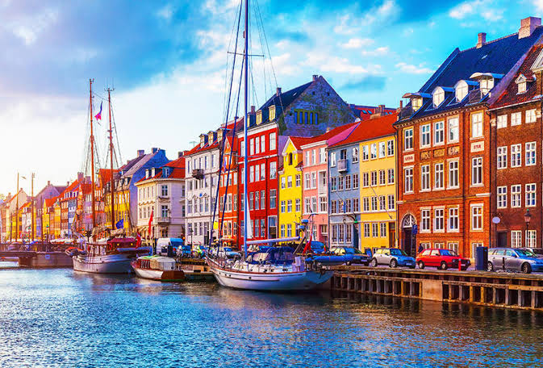
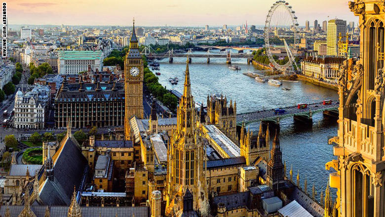

Austria

-
Carry cash — many small shops prefer euros in cash over cards.
- Try local dishes like Wiener Schnitzel and Sachertorte.
- Use public transport — it’s punctual and well-connected.
Ocean

- Pack reef-safe sunscreen to protect marine life.
-
Stay hydrated — sea air and sun can make you thirsty quickly.
-
Respect local guidelines for swimming and snorkeling safety.
Istanbul

-
Dress modestly when visiting mosques like Hagia Sophia or Blue
Mosque.
- Use Istanbulkart for affordable public transport.
-
Explore both sides — European and Asian — for unique experiences.
Tailand
-
Respect cultural customs — remove shoes before entering temples.
- Try street food, but choose busy stalls for freshness.
-
Use tuk-tuks for short trips, but agree on the price beforehand.
Paris
- Book Eiffel Tower and Louvre tickets online to skip queues.
- Learn a few French phrases — locals appreciate the effort.
-
Explore beyond the center — neighborhoods like Montmartre are
charming.
United Kingdom

- Carry an umbrella — weather changes quickly.
- Use an Oyster card for cheaper travel in London.
-
Try traditional dishes like fish and chips or afternoon tea.
Travel Inspiration
"The world is a book, and those who do not travel read only one page."
- Saint Augustine
Subscribe to our Newsletter